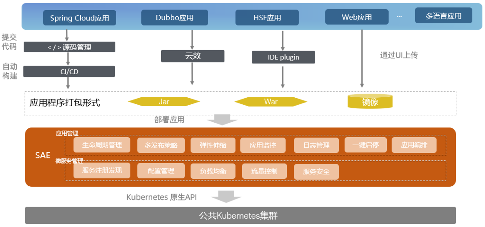
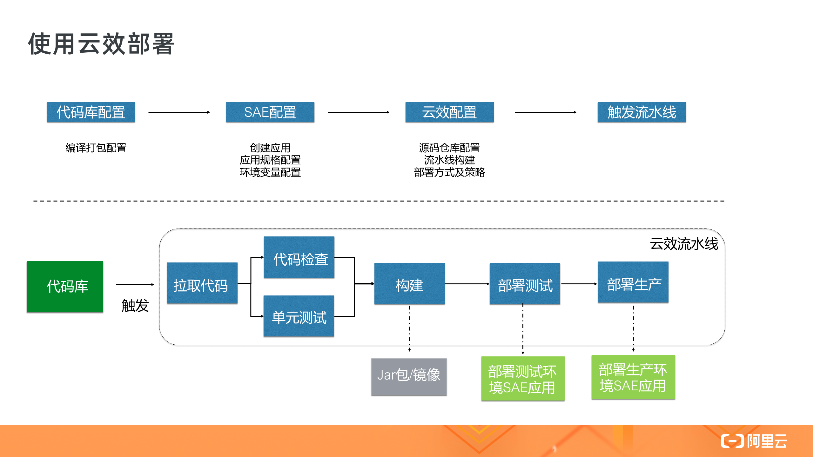
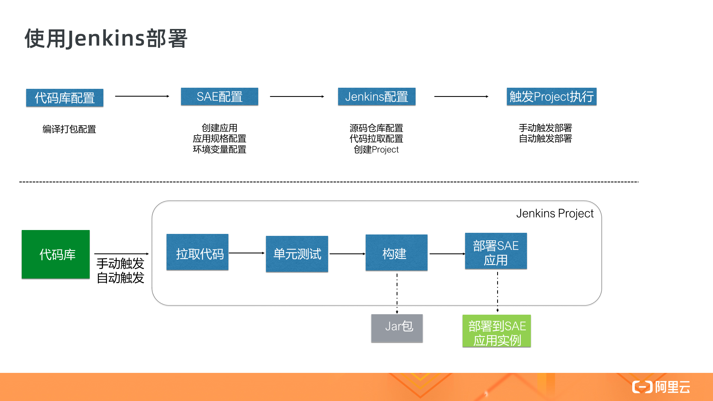

- 01 架构的演进.md.html
- 02 Serverless 的价值.md.html
- 03 常见 Serverless 架构模式.md.html
- 04 Serverless 技术选型.md.html
- 05 函数计算简介.md.html
- 06 函数计算是如何工作的？.md.html
- 07 函数粘合云服务提供端到端解决方案.md.html
- 08 函数计算的开发与配置.md.html
- 09 函数的调试与部署.md.html
- 10 自动化 CI&CD 与灰度发布.md.html
- 11 函数计算的可观测性.md.html
- 12 典型案例 1：函数计算在音视频场景实践.md.html
- 13 典型案例 3：十分钟搭建弹性可扩展的 Web API.md.html
- 14 Serverless Kubernetes 容器服务介绍.md.html
- 15 Serverless Kubernetes 应用部署及扩缩容.md.html
- 16 使用 Spot 低成本运行 Job 任务.md.html
- 17 低成本运行 Spark 数据计算.md.html
- 18 GPU 机器学习开箱即用.md.html
- 19 基于 Knative 低成本部署在线应用，灵活自动伸缩.md.html
- 20 快速构建 JenkinsGitlab 持续集成环境.md.html
- 21 在线应用的 Serverless 实践.md.html
- 22 通过 IDEMaven 部署 Serverless 应用实践.md.html
- 23 企业级 CICD 工具部署 Serverless 应用的落地实践.md.html
- 24 Serverless 应用如何管理日志&持久化数据.md.html
- 25 Serverless 应用引擎产品的流量负载均衡和路由策略配置实践.md.html
- 26 Spring CloudDubbo 应用无缝迁移到 Serverless 架构.md.html
- 27 SAE 应用分批发布与无损下线的最佳实践.md.html
- 28 如何通过压测工具+ SAE 弹性能力轻松应对大促.md.html
- 29 SAE 极致应用部署效率.md.html
23 企业级 CICD 工具部署 Serverless 应用的落地实践
背景知识

通过以往几节课程的学习，相信大家对于 SAE 平台已经有了一定的了解。SAE 为客户免除了很多复杂的运维工作，开箱即用、按用量付费；与此同时 SAE 提供了丰富的 Open API，可以很容易地与其他平台做集成；类似云效以及 Jenkins 的 CI/CD 工具是敏捷软件研发实践中的重要一环，可以自动化地将客户的代码编译、测试、打包并部署至各个环境，从而提升团队的研发效率。
本篇文章分为两个部分，首先介绍使用云效平台实现从源码到 SAE 环境的持续集成，然后介绍使用 Jenkins 的情况下持续集成该如何配置。
使用云效部署到 SAE
云效（rdc.console.aliyun.com），是阿里云推出的企业级一站式 Devops 平台型产品，功能覆盖了从【需求->开发->测试->发布->运维->运营】全流程。对云效感兴趣的同学可以去【阿里云官网】搜索【云效】，本文只介绍与 CI/CD 相关的部分功能。

如上图所示，图的上半部分是我们的配置流程，下半部分的流程图是我们所要执行的持续集成流程的示例。云效首先会从代码仓库中拉取相应的代码，然后进行代码检查以及单元测试，接着是代码编译构建，这一步会产出相应的生成物：在这里我们用一个 java 应用来举例，如果构建产出物这一步选择是 jar 类型，那么流水线在运行时运行 mvn package 命令产出对应的 jar 包；如果构建产出物类型是 Docker 镜像，那么在构建这一步在产出 jar 包后会继续执行 docker build 命令来构建对应的 Docker 镜像并上传到您所选择的 ACR 镜像仓库；流水线的最后两步是调用 SAE 的 Open API 将构建物（jar 包/Docker 镜像）部署分发到测试环境，根据我们预先的设置，在部署完测试环境这一步后流水线会停下来等待手动触发下一步操作；等待手动验证测试环境的部署一切正常后，手动触发流水线继续运行，这次将调用 Open API 部署到生产环境。
操作步骤：
- 首先确定代码的编译打包配置都正确，在本地可以正常地编译打包成功，如果是镜像方式部署，那么会要求项目根目录下有对应的Dockerfile配置；
- 在 SAE 控制台中创建相应的应用，请注意如果有多环境部署需求，比如部署到 test（测试）、product（生产） 环境，请先创建对应的 test 命名空间 以及 product 命名空间 并在 命名空间 中创建应用；
- 在云效中做好相应的配置，包括源码仓库配置及流水线配置，具体配置细节请参考相应的产品帮助文档；
- 最后一步点击“运行”触发流水线执行编译部署；
使用 Jenkins 部署 SAE
Jenkins 是被业界广泛使用的开源 CI/CD 平台，使用 Jenkins 可以将源码打包编译后部署至 SAE，其达成的最终效果与“通过云产品云效部署至SAE”类似，通过 Jenkins 将应用源码编译成为 jar 包，然后通过maven plugin 来调用 SAE 的 Open API 部署接口将应用部署至 SAE。

操作步骤：
- 代码库中有相应的打包配置，在使用 Jenkins 时我们打包的产出构建物是 jar 包，所以此处要求我们项目根目录下有对应的 maven配置文件 pom.xml；
- 在部署之前需要在 SAE 平台中创建相应的命令空间、应用，并通过初始化部署来完成应用配置；
- 在 Jenkins 中完成相应Docker插件的配置，同时需要在 Jenkins 中创建并配置相应的 Project；Project可以配置成手动触发或者配置成提交代码时触发编译及部署，具体配置请参考对应的产品帮助文档；
部署过程演示，请点击链接观看：https://developer.aliyun.com/lesson202619006
总结
看到这里，相信大家已经学会了如何使用 CICD 工具将源码非常轻松地部署至 SAE 平台，希望持续集成平台与 SAE 这个可以提升研发效能的组合，帮助您的业务快速起飞！
课程推荐
为了更多开发者能够享受到 Serverless 带来的红利，这一次，我们集结了 10+ 位阿里巴巴 Serverless 领域技术专家，打造出最适合开发者入门的 Serverless 公开课，让你即学即用，轻松拥抱云计算的新范式——Serverless。
点击即可免费观看课程：https://developer.aliyun.com/learning/roadmap/serverless